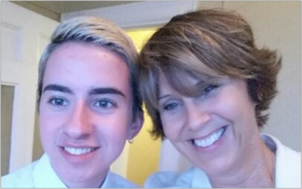

Imagine your child asking if you would like him to leave a note before he commits suicide. That’s the conversation that Liz Charpentier and her son Dennis had in 2015.
After years of battling bipolar disorder, OCD, autism, anxiety, bulimia, drug addiction, psychosis and other mental health conditions, Dennis, just 21 years old, didn’t want to live another day. “I was a lost cause. It was too late to help me,” Dennis believed.
Dennis has struggled with mental and emotional health for as long as he can remember. Those struggles have also affected his physical health. He abused prescription drugs, alcohol and developed heart issues from his bulimia. “I had all of these coping mechanisms. I was cutting myself. I burned myself. I was shooting up pain killers with dirty needles.” When he tried to stop inflicting pain on himself to deal with his illnesses, his depression and anxiety skyrocketed. Dennis’ downward spiral led to his admission into two psych wards in 2015.
“I’ve been on medication since I was nine years old. It’s never been easy, but in 2015, I was at my lowest point. Doctors tried to get me on the right meds, but it’s hard to find the right combination. Sometimes the meds make my symptoms worse. Coming off one med to start another one can be really hard also. Finding the right combination can take too long.”
2015 ticked by, with Dennis enduring several months of waiting before his medications and therapies worked. Liz remembers thinking that Dennis just needed to make it through the day. Dennis shared, “It’s hard to describe, but I had violence and loudness in my head. I didn’t know if I’d be alive in 24 hours. It was really an hour-by-hour situation.” Finally, toward the end of the year, Dennis’ treatment worked and the thoughts in his head cleared. The violence subsided. The loud noise quieted.
Today, with the right medication and support system, Dennis is alive and truly living. Friends, co-workers and a loving family surrounds Dennis. He is working at a job he enjoys and is excited about the future – looking at 2016 with great hope and positivity. Asked how he feels about discussing his personal journey, Dennis quickly offers to “talk with anyone” about his challenges. He wants to help others.
Both Dennis and Liz believe there are no easy answers. But, bringing more attention to the mental health epidemic will help increase the number of doctors, types of treatment facilities and other vital therapeutic resources.
“When your child has a psychotic episode at six years old, and then a complete mental breakdown at nine, you don’t have the time or patience for stigmas,” Liz explains. “Even now that Dennis is an adult, we are challenged to find the right treatment facilities, doctors, medications and dosages.”
As they strive to educate others and eliminate the stigma, Liz asks a profound question: “Why does our culture see a three-year-old child with mental illness differently than a three-year-old child with another condition, like diabetes or cancer?” As his mother, Liz has relentlessly navigated a complicated and dysfunctional system to seek better care for Dennis. “Who do you call when your son tells you he doesn’t want to live? Who do you call when he is having a psychotic episode and you can’t wait a month to see the psychiatrist?” Liz asked. “If you go to the ER you’ll end up waiting for someone with limited mental health qualifications to do an evaluation.” She also notes the disparity in treatment patterns: “Mental health care is doled out in five-day increments and usually in times of crisis. It’s like giving someone a fifth of their chemo dose and sending them on their way.”
Listening to Dennis and Liz tell their stories and individual journeys, it’s obvious that the love between them runs deep. “I’m cherishing every single day. Every little thing is worth celebrating. And now I see that I have something to lose,” Dennis shared.
